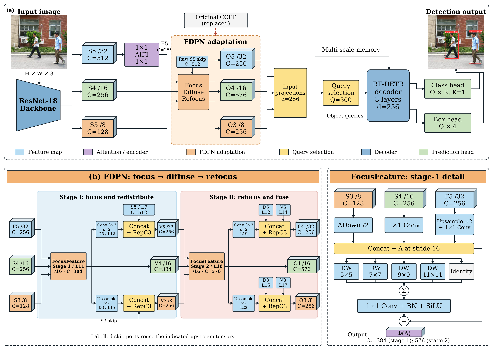
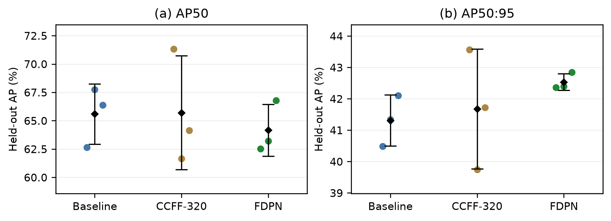
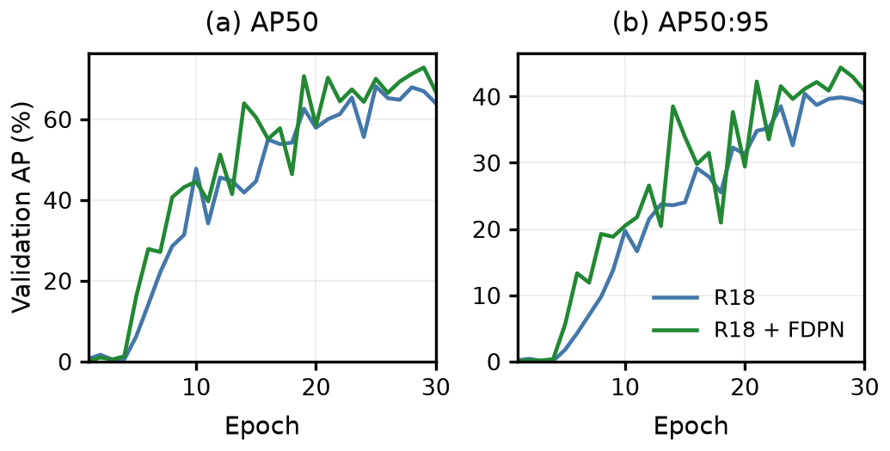

有限标注条件下，跨尺度特征融合需要兼顾空间细节、语义上下文与计算开销。针对融合容量增加和重复聚合的收益尚不明确的问题，本文以 RT-DETR-R18 为基线，对已有聚焦扩散金字塔网络（FDPN）配置进行受控评估。在统一训练协议下，设置原始融合路径和参数量接近的加宽颈部作为对照，并通过消融实验分析多核上下文聚合与第二次聚焦的作用。Penn–Fudan 三个随机种子的结果表明，FDPN 的 AP50:95 均值较两组对照分别提高 1.22 和 0.86 个百分点；相对原基线，AP50 均值下降 1.42 个百分点，推理模型参数量增加 11.9%。在固定 VOC2007-person 和 COCO2017-person 子集的探索性 100 轮实验中，AP50:95 分别提高 0.56 和 1.19 个百分点。单次消融中，完整多核配置优于单个 5×5 核配置；移除第二次聚焦后，AP50:95 近似不变，而 AP50 降低。结果表明，该融合配置的收益取决于评价指标和实验设置；多核上下文聚合与重复聚焦应结合精度和计算预算分别评价。
Cross-scale feature fusion under limited pedestrian annotations must balance spatial detail, semantic context, and computational cost. We evaluate an existing Focusing Diffusion Pyramid Network (FDPN) configuration within RT-DETR-R18 to examine the effects of increased fusion capacity and repeated aggregation. Under matched training protocols, we compare FDPN with the original fusion path and a widened neck with a similar parameter count, and use ablations to assess multi-kernel context aggregation and a second focusing stage. On Penn–Fudan, mean AP over IoU thresholds 0.50–0.95 across three random seeds increases by 1.22 and 0.86 percentage points over the two controls, respectively. Relative to the original baseline, mean AP at IoU 0.50 decreases by 1.42 percentage points, while the inference-model parameter count increases by 11.9%. Exploratory 100-epoch experiments on fixed VOC2007-person and COCO2017-person subsets yield AP gains of 0.56 and 1.19 percentage points. In a single-run ablation, the complete multi-kernel configuration outperforms a single 5×5 kernel. Removing the second focusing stage leaves AP over IoU 0.50–0.95 nearly unchanged but reduces AP at IoU 0.50. These results indicate that the observed benefits depend on the evaluation metric and experimental setting; multi-kernel aggregation and repeated focusing require separate assessment against accuracy and computational budgets.
目标检测旨在同时确定图像中目标的类别与位置。DETR 将检测建模为集合预测，通过目标查询和二分图匹配建立预测与标注之间的一对一对应关系，减少了对非极大值抑制等手工后处理的依赖[1][2]。后续方法通过稀疏多尺度注意力、显式空间查询和去噪训练改善特征交互与优化过程[5]–[7]。RT-DETR 将尺度内注意力交互与卷积跨尺度融合分离，并结合查询选择机制实现高效端到端检测[3]，为分析颈部融合结构提供了明确的模块边界。
在训练图像数量有限时，融合结构的收益不能仅由其表达容量推断。相邻层金字塔逐级传递不同分辨率的信息[8][9]；直接多层聚合则将多个层级对齐后进行联合建模，可缩短跨尺度交互路径。然而，融合拓扑、通道宽度和计算量通常同时变化，较高的检测精度未必来自拓扑本身。由此产生两个需要实验回答的问题：直接多层融合能否优于参数量接近的传统颈部，以及完成一次上下文聚合后是否仍需第二次聚焦。
本文复现已注明来源的 FDPN 增强 RT-DETR-R18 配置[10]，并将已发表的聚焦—扩散研究作为相关工作[4]。所用配置以三尺度对齐、并行逐通道卷积、双向特征重分配和第二次聚焦替换原 CCFF 路径；骨干、AIFI、查询选择、解码器主体和损失函数保持一致，解码器输入投影随通道宽度适配。本文的研究对象是该既有配置在有限标注行人检测中的性能及模块作用，融合拓扑与实现的原创归属保留给原作者。

本文主要工作如下：
本文的“有限标注”指小规模训练划分上的全监督学习，不采用正式少样本检测协议。公共子集实验用于考察同一检测器中融合配置的条件性表现，不等同于完整官方基准或跨数据集零样本泛化评价。
基于 Transformer 的检测器通过特征编码、查询初始化和集合解码生成一组目标预测[1]。Deformable DETR 利用稀疏多尺度采样降低注意力计算开销[5]；DAB-DETR 将空间位置显式引入目标查询[6]；DINO 结合去噪、混合查询选择和迭代框修正改善训练与定位[7]。这些方法分别作用于特征交互、查询表示和优化过程，为在固定其余模块时分析单一结构变化提供了基础。
实时检测进一步要求控制编码器和解码器的计算开销。RT-DETR 通过尺度内注意力与跨尺度卷积融合的分工减少冗余交互，并允许调整解码器深度[3]。本文沿用其 R18 配置，重点考察跨尺度融合路径及必要的输入通道适配，以限制比较中同时变化的模块范围。这一设置将编码与查询机制的改动排除在主要比较之外，使结果能够围绕融合路径解释。
FPN 通过自顶向下的侧向连接构造兼具空间分辨率与语义信息的特征金字塔[8]；PANet 增加自底向上路径，以缩短浅层定位信息的传播距离[9]；BiFPN 采用可学习权重进行重复双向融合[11]。三类设计均处理跨层信息交互，但在连接拓扑、重采样次数和融合权重上存在差异。
与相邻层逐级融合相比，多层直接聚合先将不同尺度对齐至共同分辨率，再进行上下文建模。该结构增加了直接交互机会，也可能改变表示宽度与感受野。因此，评价融合结构时需要同时报告参数和计算代价，并通过容量接近的对照检验单纯加宽是否能解释性能变化。
聚焦—扩散结构将跨尺度处理分为两个阶段：先对齐并聚合多个层级的特征，再将融合结果分发至各检测尺度。已有 FDFPN 研究将这种组织方式用于遥感目标检测[4]。本文使用的工程源码提供 FocusFeature 算子及其在 RT-DETR 中的 FDPN 融合图[10]。本文按实际执行的源码定义算子与连接关系，不将相关文献中的实验结论直接迁移到行人检测任务。
该结构在有限行人标注下的收益仍需独立验证。本文采用匹配训练设置、容量对照与模块消融，评价完整配置及各模块的经验作用。其中，容量对照用于检验单纯加宽这一替代解释，消融则比较具体算子组合的作用。
设输入图像 I 的空间尺寸为 H×W。ResNet-18 风格骨干[12]输出特征 {P3, P4, P5}，对应步长 {8,16,32} 和通道数 {128,256,512}。记 F5 为第 8–10 层投影—AIFI—投影序列的 256 通道输出；P5 则指原始 512 通道骨干特征。基线通过 CCFF 的自顶向下与自底向上路径构造三个解码器输入。所用实现按最大类别得分选择前 Q=300 个编码位置以初始化目标查询，三层 RT-DETR 解码器输出类别概率与归一化边界框。
比较配置使用相同的一对一匹配、分类与边界框回归损失、查询数量及解码器主体[1][3]。结构变化涉及融合路径和必要的输入投影，因而同时影响模型容量。本文通过加宽 CCFF 对照部分控制参数量差异，但不将其视为完全隔离拓扑效应的实验。
图 1 给出 FDPN 的实际连接关系。第一阶段 FocusFeature 接收 (F5, P4, P3)，聚合结果位于步长 16 的尺度，随后通过降采样和上采样分支分别传播至步长 32 和 8，与对应骨干特征拼接后由 RepC3 精炼。第二阶段在步长 16 重新聚合三个特征流，并通过最终双向融合生成解码器输入。
两个 FocusFeature 具有相同的算子结构，但参数独立。“第二次聚焦”因此表示另一个可学习聚合阶段，而非重复调用同一组权重。两个阶段及其直接重分配分支均保留至最终融合；具体层索引见附录 B。
FDPN 输出至解码器的三个尺度通道数为 {256,576,256}，基线为 {256,256,256}。两者使用适配各自通道数的输入投影，解码器隐藏维度、层数和查询数量保持一致。因此，融合拓扑与表示宽度在该比较中同时变化。
第一阶段以 P4 的空间分辨率为对齐目标。F5 分支先上采样 2 倍，再执行 1×1 卷积；P4 分支直接投影；P3 分支使用 ADown 降采样。ADown 先进行平均池化与通道拆分，一路执行步长 2 卷积，另一路执行最大池化和 1×1 投影，随后拼接。分别记三个变换为 U、M 与 D，则对齐结果为：
各分支输出通道数均为中间层输入通道数的一半，拼接结果因而为其 1.5 倍。该设计保留三个层级的特征，并限制后续上下文聚合的表示宽度。本配置两个聚焦阶段的聚合通道数分别为 384 和 576。
对齐特征通过核集合 𝒦={5,7,9,11} 的并行逐通道卷积进行空间建模。记 DWk 为核边长为 k 的逐通道卷积，𝒫 为逐点卷积、批归一化与 SiLU 激活组成的投影算子，则聚焦操作为：
内层恒等分支保留对齐特征，外层残差为特征和梯度提供直接通路。逐通道卷积在各通道内独立进行空间聚合，通道之间的信息交互由 𝒫 完成。核尺寸预先固定，各分支通过求和融合，不含随输入变化的分支权重。两个独立聚焦算子分别记为 Φ1 和 Φ2。
对于通道数为 C 的特征，逐通道卷积的权重数与 C 成正比，而同宽密集卷积的权重数与 C 的平方成正比。这解释了大核空间聚合的参数效率，但不能直接推出整个 FDPN 的计算优势；通道扩展、逐点投影和双向融合的代价仍需由完整模型统计。
本文的“扩散”指确定性的跨尺度特征重分配。设第一阶段输出为 Z4(1)=Φ1(A)。其步长 2 卷积与上采样分支分别记为 D5（第 12 层）和 U3（第 15 层）。两路特征分别与原始 P5、P3 拼接，经 RepC3 得到 Z5(1) 和 Z3(1)。随后执行第二次聚焦：
Z4(2) 的最终降采样分支与 D5、Z5(1) 拼接，上采样分支与 U3、Z3(1) 拼接；两者经 RepC3 分别生成 O5 与 O3，并令 O4=Z4(2)。最终表示同时保留第一阶段的重分配信息与第二阶段的聚合结果。第四节分别评价多核上下文聚合和第二次聚焦的经验收益。
实验围绕三个问题展开：FDPN 相对原基线与容量接近的对照是否具有精度收益；收益对应何种计算代价；模块作用是否随评价指标和训练预算变化。
数据划分。以 Penn–Fudan[13] 为主要数据集，并使用 VOC2007[18][19] 和 COCO2017[17][20] 的固定 person 单类子集。Penn–Fudan 的检测框由官方实例掩码生成，全部 423 个实例与随附文本标注一致。表 1 列出图像互不重叠的训练、验证与测试划分。VOC 各划分分别从官方对应数据池抽取；COCO 训练与验证样本均来自 train2017 且互不重叠，测试样本来自 val2017。两个公共子集的每个划分均包含 20% 不含行人的背景图像。由于所用评估器未实现 difficult/crowd 忽略规则，抽样时排除含此类行人标注的整幅图像，其余合格图像中的全部行人框均予保留。各数据集分别训练模型。
| 数据集 | 训练 | 验证 | 测试 |
|---|---|---|---|
| Penn–Fudan | 120 / 294 | 25 / 65 | 25 / 64 |
| VOC2007-person | 300 / 482 | 50 / 77 | 100 / 152 |
| COCO2017-person | 300 / 748 | 50 / 121 | 100 / 297 |
训练设置。各组比较使用相同数据和优化设置，均从头训练[14][15]。输入尺寸为 416×416 像素，批量为 4，优化器为 AdamW[16]，学习率和权重衰减均为 10−4，设备为 RTX 3090。初始 Penn–Fudan 对照与模块消融训练 30 轮，随机种子为 2026；公共子集分别独立训练 30 和 100 轮。后续在 Penn–Fudan 上以种子 2026、2027、2028 重新训练原基线、FDPN 和 CCFF-320，各训练 30 轮。九次训练完成后统一评价测试集；该组实验复用既有数据划分，用于分析随机种子敏感性。
指标与模型选择。主要指标为 IoU 从 0.50 至 0.95、间隔为 0.05 时的平均 AP，记为 AP50:95；另报告 AP50、精确率和召回率[17]。由于仅有 person 一个前景类别，mAP 与该类 AP 相等。各次运行依据验证集适应度 0.1×AP50+0.9×AP50:95 选择规定训练轮数内的最佳检查点，同次运行的全部测试指标均由该检查点计算。精确率（P）与召回率（R）使用工具包根据各模型 F1 曲线选取的工作点，不对应统一部署阈值。AP、P 和 R 以百分比表示；指标差值以百分点表示，并由未舍入数值计算。参数量以百万（M）为单位。除特别说明外，误差项为三个随机种子的样本标准差。
CCFF-320 在训练前根据参数量接近程度确定。其推理模型参数量为 22.029 M，与 FDPN 的 22.236 M 相差 0.93%；该对照保留原有融合拓扑、骨干、AIFI 和解码器主体，但不匹配计算量与推理时间。CCFF-320 与原基线的差异反映传统拓扑下的加宽结果，而 FDPN 与 CCFF-320 的比较用于评价容量接近时的融合配置。表 2 报告三个随机种子的结果。
| 模型 | 参数量 / M | AP50 | AP50:95 |
|---|---|---|---|
| RT-DETR-R18 | 19.873 | 65.59 ± 2.65 | 41.31 ± 0.81 |
| CCFF-320 对照 | 22.029 | 65.71 ± 5.02 | 41.68 ± 1.91 |
| + FDPN | 22.236 | 64.17 ± 2.29 | 42.54 ± 0.27 |
FDPN 的 AP50:95 均值为 42.54%，较原基线的 41.31% 和 CCFF-320 的 41.68% 分别提高 1.22 与 0.86 个百分点。相对原基线，三个相同种子下的配对差值分别为 +1.88、+1.06 和 +0.74 个百分点，方向一致；相对 CCFF-320 的差值分别为 −1.20、+2.65 和 +1.12 个百分点，说明容量接近时的优势并非逐次成立。结果支持该配置在本划分上的平均跨阈值精度收益，但尚不足以将收益独立归因于融合拓扑。
AP50 的变化方向不同：FDPN 均值为 64.17%，较原基线下降 1.42 个百分点。AP50 与 AP50:95 分别强调单一宽松定位阈值和多个定位阈值的平均表现，两者不能互相替代。当前汇总指标不足以进一步确定差异源于漏检、误检或边界框定位误差；图 1 的单幅预测仅说明实现输出，不能作为小目标或遮挡性能改善的证据。图 2 展示逐次结果；样本标准差反映本次种子波动，不构成统计显著性结论。

表 3 将初始 Penn–Fudan 实验与两个公共子集的 100 轮结果分别列示。后者在查看 30 轮测试结果后开展，属于复用测试划分的探索性扩展；这些运行不与后续 Penn–Fudan 三个种子的结果合并统计。
| 数据集 / 轮数 | 模型 | AP50 | AP50:95 | ΔAP50:95 / 百分点 |
|---|---|---|---|---|
| Penn–Fudan / 30 | R18 | 63.45 | 40.42 | — |
| Penn–Fudan / 30 | + FDPN | 66.82 | 46.85 | +6.44 |
| VOC-person / 100 | R18 | 36.30 | 16.71 | — |
| VOC-person / 100 | + FDPN | 39.14 | 17.27 | +0.56 |
| COCO-person / 100 | R18 | 16.44 | 6.92 | — |
| COCO-person / 100 | + FDPN | 18.84 | 8.11 | +1.19 |
初始 Penn–Fudan 单次实验中，AP50:95 提高 6.44 个百分点至 46.85%，AP50 提高 3.36 个百分点至 66.82%；召回率提高 7.81 个百分点，精确率下降 3.17 个百分点。后续不同种子的平均 AP50:95 增益仅为 1.22 个百分点，因此初始较大差值不能作为该配置的稳定预期收益。
在 100 轮实验中，VOC-person 和 COCO-person 的 AP50:95 分别提高 0.56 和 1.19 个百分点，AP50 分别提高 2.84 和 2.40 个百分点。与附录 A 的 30 轮结果比较，VOC 的 AP50:95 增益由 3.28 缩小至 0.56 个百分点，而 COCO 由 0.16 增至 1.19 个百分点；COCO 的 AP50 差值也由 −0.61 转为 +2.40 个百分点。由此可见，短训练预算下的相对排序不能直接替代较长预算下的比较。两种预算为独立训练运行，并非同一检查点的连续训练，因此这些变化不能解释为确定的学习动态。
公共子集结果仍为单次运行，且 COCO-person 的最佳 AP50:95 仅为 8.11%。这些结果提供了数据来源与训练预算的补充观察，不支持对完整 VOC/COCO 基准性能或跨域泛化作出结论。
| 模型 | 参数量 | GFLOPs 640×640 | ms/图 416×416 |
|---|---|---|---|
| RT-DETR-R18 | 19.873 M | 56.9 | 8.71 |
| RT-DETR-R18 + FDPN | 22.236 M | 66.1 | 9.55 |
| 相对变化 | +11.9% | +16.2% | +9.7% |
FDPN 的推理模型参数量由 19.873 M 增至 22.236 M，增加 11.9%；在 640×640 像素输入下，THOP 估计计算量由 56.9 增至 66.1 GFLOPs，增加 16.2%。原始记录中，RTX 3090 上 416×416 像素输入、批量为 4 的纯模型推理时间约增加 0.85 ms/图，即 9.7%，不含预处理与后处理。计算量统计和推理计时采用不同输入尺寸，二者分别报告，不据此推导统一的吞吐率结论。
结合表 2，额外参数与计算开销对应约 1.22 个百分点的 AP50:95 平均增益，同时伴随 AP50 下降。该结果体现了具体配置下的精度—开销取舍，而非统一的效率提升。计时来自历史单次测试过程，未进行重复计时或部署硬件比较，因此仅作为描述性开销记录。
消融采用相同的 Penn–Fudan 30 轮协议，以独立重新训练的完整 FDPN 为同批对照。单核变体将两个聚焦阶段的核集合 {5,7,9,11} 改为 {5}；再聚焦变体以 1×1 投影替代第二阶段，保留 576 通道输出和最终跳跃连接。各变体维持解码器输入接口，但参数量不同。表 5 的差值均相对该批完整模型计算。
| 配置 | 参数量 / M | AP50 | AP50:95 | ΔAP50:95 / 百分点 |
|---|---|---|---|---|
| 完整 FDPN（重新训练） | 22.236 | 65.25 | 44.01 | +0.00 |
| 仅用 5×5 核 | 21.992 | 59.67 | 38.02 | −6.00 |
| 取消第二次聚焦 | 21.718 | 64.09 | 44.06 | +0.05 |
多核上下文聚合。改用单个 5×5 核后，AP50:95 由 44.01% 降至 38.02%，按原始指标计算下降 6.00 个百分点，而参数量仅减少约 0.244 M，约占完整模型的 1.10%。源码中的两个聚焦阶段分别具有 384 和 576 个聚合通道；移除其余三个逐通道卷积分支所减少的权重与偏置数合计为 243,840，与模型参数差一致。该对照说明，在所测试配置中，多核分支以较小参数代价对应较高检测精度。但分支数量、最大核尺寸与感受野同时改变，实验不能区分核尺寸多样性、感受野扩大及容量变化各自的贡献。
第二次聚焦。以投影替代后，AP50:95 由 44.01% 变为 44.06%，差值为 +0.05 个百分点；参数量减少约 0.518 M，即 2.33%。与此同时，AP50 由 65.25% 降至 64.09%，按未舍入值计算下降 1.15 个百分点。因此，该变体主要体现参数开销与单阈值精度之间的取舍，不能解释为全面优于完整模型。由于各配置仅运行一次，近似持平的 AP50:95 亦不构成统计等效或第二阶段冗余的证据。
结构解释与实验支持的范围。直接三尺度对齐和大核空间聚合为跨层信息交换提供了明确路径，但计算图只能说明信息如何传递，不能证明“语义冲突被消除”或“小目标特征得到保留”。当前实验支持的是完整配置在固定划分上的指标变化。要将增益归因于特定机制，仍需等宽度、等计算量的模块对照或相应的误差分组分析。
随机性与可重复性。三个随机种子的 FDPN AP50:95 样本标准差低于两组对照，但训练种子数量有限，且复用相同测试划分，不能据此认定更强的总体稳定性。初始完整模型与消融完整模型虽然声明相同种子，AP50:95 仍相差 2.84 个百分点，具体来源尚未隔离；二者分开报告，模块差异仅在同批对照内解释。
数据与外推限制。小测试集、公共子集的背景比例及 difficult/crowd 排除规则均限定了评价对象。公共子集结果为探索性单次比较，且测试集已被复用；本文未评估小目标、遮挡程度、跨域迁移或真实部署。因此，结论限于已报告的数据划分、训练预算与指标，不延伸为普遍的行人检测优势。
本文对已有 FDPN 增强 RT-DETR-R18 配置进行了受控复现与组件分析。在 Penn–Fudan 三个随机种子的实验中，AP50:95 均值较原基线和参数量接近的加宽颈部分别提高 1.22 与 0.86 个百分点，但 AP50 均值下降，参数和计算开销增加。单次消融表明，多核配置相对单个 5×5 核具有较高的跨阈值 AP，而移除第二次聚焦主要降低参数量与 AP50，AP50:95 近似持平。公共子集结果进一步说明，融合配置的相对表现依赖训练预算。后续验证应优先采用计算开销匹配的对照、更多随机种子和独立测试划分，以区分结构收益、容量效应与实验波动。
感谢课程教师在视觉表示与实验评价方面的指导，以及开源软件维护者和所用模块实现的原作者。
图 3 展示初始两组运行的验证曲线。30 轮末期指标仍在上升，尚不足以判定收敛。该组运行不并入后续三个随机种子的统计；模块消融仍以同批完整模型为参照。

表 A1 汇总 FDPN 相对原基线的带符号差值，包括 COCO 在短预算下的 AP50 下降。100 轮实验属于复用既有测试划分的探索性扩展；各差值均先由未舍入指标计算，再统一保留两位小数。
| 数据集 | 轮数 | ΔAP50 | ΔAP50:95 |
|---|---|---|---|
| VOC-person | 30 | +9.24 | +3.28 |
| VOC-person | 100 | +2.84 | +0.56 |
| COCO-person | 30 | -0.61 | +0.16 |
| COCO-person | 100 | +2.40 | +1.19 |
原基线、FDPN 和 CCFF-320 在相同划分上分别以种子 2026、2027、2028 训练，统计见表 2，逐次分布见图 2。CCFF-320 保留原融合拓扑并匹配参数量，但未匹配计算量和推理时间。样本标准差采用 n=3、分母为 n−1 的定义，只描述固定测试划分上的种子波动。
第 11、18 层 FocusFeature 的参数相互独立，核集合均为 {5,7,9,11}。解码器读取第 24、18、21 层，分别对应步长 {8,16,32} 和通道数 {256,576,256}。输入投影将各尺度适配至 256 维隐藏表示；解码器使用三层结构和 300 个查询。骨干与 AIFI 的算子结构保持一致。